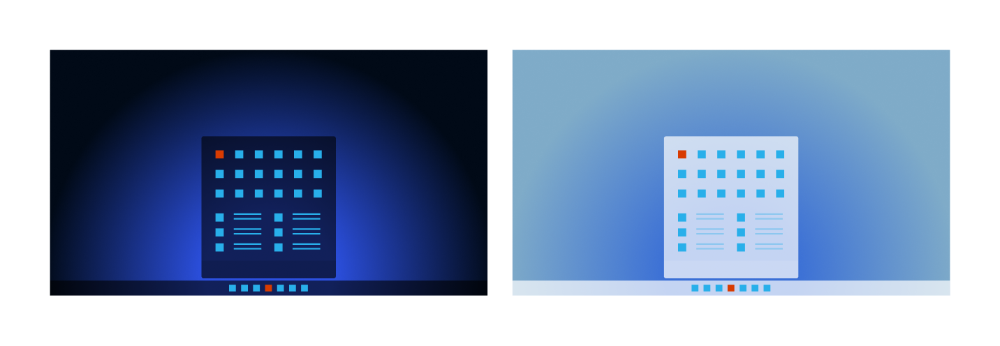

App icons
App icons are the visual indicators we use to help users find and launch an application on Windows.
It's the first impression of your app and we want to help make sure it's a great one. This article covers the best practices for Windows app icon design and implementation to provide the best experience in the Windows ecosystem.
Tip
This article describes icons that represent your app in Windows and the Windows Store. To learn about icons that you use inside your app UI, see Icons in Windows apps.
Where do app icons appear?

App icons appear in a variety of places in Windows:
- Start menu
- Start menu's 'All apps' list
- Taskbar
- Splash screen
- App title bar
- Search results
- Notifications
- "Open with" list
- Task manager
- JumpLists
- Settings
- Share dialog
Principles for great app icons
Keep it simple
Create clean, straightforward, timeless designs — Icons are quick visual cues that represent your app. Simple, easy to understand designs help users recognize your app more quickly.
Keep it universal
Make it accessible, inviting, and easy to understand — Avoid complex or overly abstract forms. An intricate shape may be appropriate in some cultures but not in others. Inclusive icons are better for everyone. We focus on human unifiers – our motivations, relationships, and capabilities. We design to extend human abilities and create a sense of belonging.
Do less, better
When every detail is thoughtfully crafted, delight happens — The best apps offer beautiful design and reliable experiences. Your icon should illustrate your app in a singular element using simple forms.
Design and create your app's icon
- Design guidelines for Windows app icons — Learn how to use metaphor, shape, color, and shadow to design a beautiful and functional icon for your app.
- Construct the icon for your Windows app — Create icons that look good at any size, on any screen.
- Construction guidelines for Windows 10 icons — If your app runs on Windows 10, your app's icons will be displayed in Live Tiles. Learn more about additional considerations for icons on Windows 10.